리눅스마스터-2급 (2022-09-03 기출문제)
1과목: 리눅스 운영 및 관리
1. 다음은 /etc/passwd 파일의 내용을 출력하는 과정이다. ( 괄호 ) 안에 들어갈 명령어로 알맞은 것은?
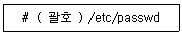
- lp
- lpc
- lpstat
- lprm
(정답률: 78%)

2. 다음 중 System V 계열에 속하는 프린트 관련 명령어로 틀린 것은?
- lp
- lpc
- lpstat
- cancel
(정답률: 64%)
3. 다음 설명에 해당하는 LVM 관련 용어로 알맞은 것은?
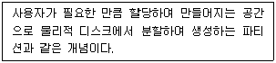
- 볼륨 그룹(VG)
- 논리적 볼륨(LV)
- 물리적 볼륨(PV)
- 물리적 확장(PE)
(정답률: 70%)
4. 다음 설명에 해당하는 용어로 알맞은 것은?
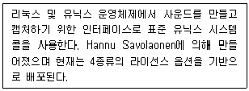
- ALSA
- CUPS
- OSS
- SANE
(정답률: 68%)
5. 다음 중 인터넷상에서 원격으로 인쇄하기 위해 사용되는 프로토콜명으로 알맞은 것은?
- IPP
- LPRng
- CUPS
- PPD
(정답률: 64%)
6. 다음 중 구성된 디스크 중에 한 개라도 오류가 발생하면 데이터 복구가 불가한 RAID 구성법으로 알맞은 것은?
- RAID-0
- RAID-1
- RAID-5
- RAID-6
(정답률: 80%)
7. 다음 중 rpm 명령에서 설치할 때 사용하는 옵션으로 가장 거리가 먼 것은?
- -i
- -U
- -f
- -F
(정답률: 55%)
8. 다음 중 소스 파일을 이용한 설치 방법이 나머지 셋과 다른 것은?
- Apache httpd
- MySQL
- PHP
- Nmap
(정답률: 74%)
9. 다음 중 데비안 계열 리눅스에서 사용하는 패키지 관리 도구로 가장 알맞은 것은?
- rpm
- yum
- dpkg
- YaST
(정답률: 73%)
10. 다음 중 yum을 이용해서 nmap 패키지를 제거하는 명령으로 알맞은 것은?
- yum delete nmap
- yum clean nmap
- yum remove nmap
- yum destory nmap
(정답률: 78%)
11. 다음 중 아파치 웹 서버 소스 파일을 내려받은 후 압축을 해제하는 과정이다. ( 괄호 ) 안에 들어갈 내용으로 알맞은 것은?
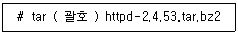
- jxvf
- Jxvf
- zxvf
- Zxvf
(정답률: 57%)
12. 다음 중 소스 파일을 이용한 설치 단계로 가장 알맞은 것은?
- make clean → make → make install
- make → make clean → make install
- configure → make → make install
- configure → make clean → make install
(정답률: 78%)
13. 다음 중 온라인 기반 패키지 관리 도구로 거리가 먼 것은?
- apt-get
- yum
- zypper
- YaST
(정답률: 63%)
14. 다음 중 의존성이 있는 httpd 패키지를 강제로 제거하는 명령으로 알맞은 것은?
- rpm –r httpd --force
- rpm –r httpd --nodeps
- rpm –e httpd --force
- rpm –e httpd --nodeps
(정답률: 54%)
15. 다음 중 vi 편집기에서 변경된 내용을 저장하지 않고 종료하는 명령으로 알맞은 것은?
- :w!
- :q!
- :x!
- :e!
(정답률: 83%)
16. 다음 중 emacs 편집기를 개발한 인물로 알맞은 것은?
- 빌 조이
- 리처드 스톨먼
- 리누스 토발즈
- 브람 무레나르
(정답률: 74%)
17. 다음 중 vi 편집기에서 줄의 시작이 linux 일 때 Linux로 치환하는 명령으로 알맞은 것은?
- :% s/^linux/Linux/
- :% s/\<linux/Linux/
- :% s/\<linux\>/Linux/
- :% s/$linux/Linux/
(정답률: 68%)
18. 다음 중 vi 편집기에서 현재 커서가 위치한 줄부터 아래 방향으로 3줄 복사하는 명령으로 알맞은 것은?
- 3j
- 3p
- 3dd
- 3yy
(정답률: 71%)
19. 다음은 ( 괄호 ) 안에 들어갈 내용으로 알맞은 것은?
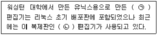
- ㉠ vi, ㉡ vim
- ㉠ vi, ㉡ pico
- ㉠ pico, ㉡ nano
- ㉠ nano, ㉡ pico
(정답률: 70%)
20. 다음은 vi 편집기 실행 시에 자동으로 행 번호가 나타나도록 설정하는 과정이다. ( 괄호 ) 안에 들어갈 파일명과 설정 내용의 조합으로 알맞은 것은?
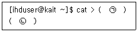
- ㉠ .virc, ㉡ set no
- ㉠ .virc, ㉡ set nu
- ㉠ .exrc, ㉡ set no
- ㉠ .exrc, ㉡ set nu
(정답률: 61%)
21. 다음 중 백그라운드로 수행 중인 프로세스를 확인하는 명령어로 알맞은 것은?
- bg
- fg
- jobs
- nohup
(정답률: 71%)
22. 다음 중 CentOS 7 버전에서 모든 프로세스의 시작이 되는 프로세스 이름으로 알맞은 것은?
- init
- inetd
- deamon
- systemd
(정답률: 64%)
23. 다음 제시된 명령을 백그라운드 프로세스로 실행하려고 할 때 ( 괄호 ) 안에 들어갈 내용으로 알맞은 것은?
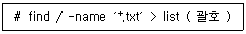
- ;
- |
- &
- +
(정답률: 75%)
24. 다음 중 작업 중인 터미널이 닫혀야 실행 중인 프로세스를 계속해서 백그라운드 프로세스로 유지하려고 할 때 사용하는 명령어로 알맞은 것은?
- bg
- fg
- jods
- nohup
(정답률: 64%)
25. 다음 명령의 결과에 대한 설명으로 알맞은 것은?
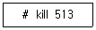
- PID가 513번인 프로세스에 1번 시그널을 전송한다.
- PID가 513번인 프로세스에 9번 시그널을 전송한다.
- PID가 513번인 프로세스에 15번 시그널을 전송한다.
- kill 명령어는 프로세스명을 사용하므로 명령 오류가 발생한다.
(정답률: 64%)
26. 다음은 프로세스 아이디(PID)가 1222번인 프로세스의 우선순위 값을 변경하는 과정이다. ( 괄호 ) 안에 들어갈 명령어로 알맞은 것은?
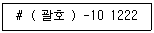
- nice
- renice
- top
- ps
(정답률: 69%)
27. 다음 ( 괄호 ) 안에 들어갈 내용으로 가장 알맞은 것은?
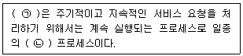
- ㉠ standalone, ㉡ foreground
- ㉠ standalone, ㉡ background
- ㉠ daemon, ㉡ foreground
- ㉠ daemon, ㉡ background
(정답률: 67%)
28. 다음 설명에 해당하는 명칭으로 알맞은 것은?
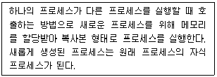
- exec
- fork
- init
- inetd
(정답률: 75%)
29. 다음 중 cron을 이용해서 매주 1회만 작업 스크립트를 실행하려고 할 때 ( 괄호 ) 안에 들어갈 내용을 알맞은 것은?
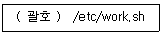
- 4 0 * 1 *
- 4 0 1 * *
- 4 0 * * 2
- 4 0 * 2 *
(정답률: 57%)
30. 다음 중 [Ctrl]+[z] 키 조합으로 실행했을 때 발생하는 시그널명과 번호의 조합으로 알맞은 것은?
- SIGSTOP, 19
- SIGSTOP, 20
- SIGTSTP, 19
- SIGTSTP, 20
(정답률: 53%)
31. 다음 설명에 해당하는 셸의 기능으로 알맞은 것은?
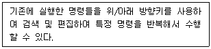
- 명령행 완성 기능
- 명령행 편집 기능
- 명령어 히스토리 기능
- 명령어 alias 기능
(정답률: 73%)
32. 다음 중 현재 사용 가능한 셸 목록 정보가 저장된 파일명으로 알맞은 것은?
- /etc/passwd
- /etc/shells
- /etc/login.defs
- /etc/default/useradd
(정답률: 78%)
33. 다음 설명에 해당하는 셸로 알맞은 것은?
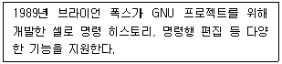
- ksh
- tcsh
- bash
- dash
(정답률: 75%)
34. 다음 선언된 셸 변수를 해제하는 명령어로 알맞은 것은?
- env
- set
- unset
- printenv
(정답률: 77%)
35. 다음 설명에 해당하는 파일로 가장 알맞은 것은?
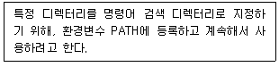
- ˜/.bashrc
- ˜/.bash_history
- ˜/.bash_profile
- ˜/.bash_logout
(정답률: 55%)
36. 다음 ( 괄호 ) 안에 출력되는 내용으로 알맞은 것은?
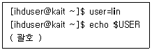
- lin
- USER
- ihduser
- 아무것도 출력되지 않는다.
(정답률: 61%)
37. 다음 중 로그인 셸을 확인하는 명령으로 알맞은 것은?
- cat SHELL
- cat $SHELL
- echo SHELL
- echo $SHELL
(정답률: 70%)
38. 다음은 ihduser 사용자가 로그인 후에 사용 중인 셸을 확인하는 과정이다. ( 괄호 ) 안에 들어갈 내용으로 알맞은 것은?
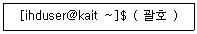
- ps
- chsh -s
- chsh -l
- chsh -u
(정답률: 45%)
39. 다음 중 디스크 용량 단위를 적은 순서부터 큰 순서로 바르게 나열한 것은?
- GB＜TB＜PB＜EB
- TB＜GB＜PB＜EB
- GB＜TB＜EB＜PB
- TB＜GB＜EB＜PB
(정답률: 73%)
40. 다음은 ihduser 사용자의 디스크 사용량을 확인하는 과정이다. ( 괄호 ) 안에 들어갈 명령어로 알맞은 것은?
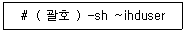
- quota
- mount
- df
- du
(정답률: 60%)
41. 다음은 /project 디텍터리를 포함해서 하위 디렉터리 및 파일의 그룹 소유권을 project로 변경하는 과정이다. ( 괄호 ) 안에 들어갈 내용으로 알맞은 것은?
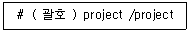
- chgrp -r
- chgrp -R
- chmod -r
- chown -r
(정답률: 62%)
42. 다음은 XFS 파일 시스템으로 구성된 /dev/sdb1 파티션을 점검 및 복구하는 과정이다. ( 괄호 ) 안에 들어갈 명령으로 알맞은 것은?
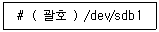
- fsck –t xfs
- e2fsck –t xfs
- xfs_repair
- mkfs –t xfs
(정답률: 59%)
43. 다음 결과에 해당하는 명령어로 알맞은 것은?
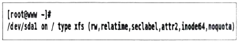
- fdisk
- mount
- df
- du
(정답률: 52%)
44. 다음 중 chmod 명령어 사용법 관련된 예로 틀린 것은?
- chmod u+s a.out
- chmod g+s a.out
- chmod o+t /project
- chmod g+t /project
(정답률: 53%)
45. 다음은 ihduser 사용자의 디스크 쿼터를 설정하는 과정이다. ( 괄호 ) 안에 들어갈 명령으로 알맞은 것은?
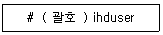
- quota
- edquota
- repquota
- xfs_quota
(정답률: 56%)
46. 다음 명령을 실행했을 경우에 'a.txt' 파일의 허가권 값으로 알맞은 것은?
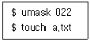
- ----r--r--
- -rwxr-xr-x
- -rw-r--r--
- -rw-rw-r--
(정답률: 62%)
47. 다음 중 사용자 디스크 쿼터 설정을 위해 /etc/fstab 파일에 설정하는 옵션 값으로 틀린 것은?
- quota
- uquota
- usrquota
- userquota
(정답률: 48%)
48. 다음의 경우 관련 설명으로 알맞은 것은?
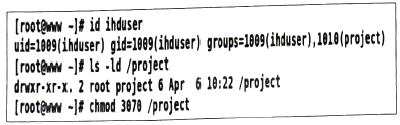
- ihduser 사용자는 /project 디렉터리에 들어갈 수 없다.
- ihduser 사용자는 /project 디렉터리에 들어갈 수는 있으나 파일을 생성할 수 없다.
- ihduser 사용자가 /project 디렉터리에 파일을 생성하면 그룹 소유권은 project이다.
- ihduser 사용자가 /project 디렉터리에 파일을 생성하면 그룹 소유권은 ihduser이다.
(정답률: 51%)
2과목: 리눅스 활용
49. 다음 중 리눅스 커널 기반으로 만들어진 운영체제로 틀린 것은?
- webOS
- QNX
- GENIVI
- Tizen
(정답률: 58%)
50. 다음 설명의 경우에 구성해야 할 클러스터 기법으로 가장 알맞은 것은?
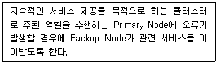
- 베어울프 클러스터
- 고계산용 클러스터
- 부하분산 클러스터
- 고가용성 클러스터
(정답률: 68%)
51. 다음 설명에 가상화 기술로 알맞은 것은?
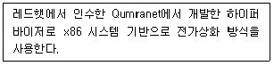
- Docker
- Xen
- KVM
- VirtualBox
(정답률: 55%)
52. 다음 설명에 해당하는 빅데이터 관련 기술로 알맞은 것은?
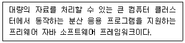
- Hadoop
- NoSQL
- R
- Anisible
(정답률: 62%)
53. 다음은 특정 IP 주소에 가상 도메인을 설정하는 과정이다. ( 괄호 ) 안에 들어갈 파일명으로 알맞은 것은?
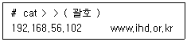
- /etc/hosts
- /etc/resolv.conf
- /etc/sysconfig/network
- /etc/sysconfig/network-scripts
(정답률: 58%)
54. 다음 설명에 해당하는 파일로 알맞은 것은?
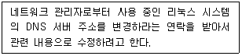
- /etc/hosts
- /etc/resolv.conf
- /etc/sysconfig/network
- /etc/sysconfig/network-scripts
(정답률: 55%)
55. 다음 중 FTP 서비스에서 사용하는 포트 번호에 대한 설명으로 알맞은 것은?
- FTP 서비스는 20번 포트를 사용해서 데이터 전송 및 제어를 관리한다.
- FTP 서비스는 21번 포트를 사용해서 전송 및 제어를 관리한다.
- FTP 서비스는 20번 포트로 데이터를 전송하고, 21번 포트로 제어한다.
- FTP 서비스는 20번 포트로 제어하고, 21번 포트로 데이터를 전송한다.
(정답률: 63%)
56. 다음 설명에 해당하는 인터넷 서비스로 알맞은 것은?
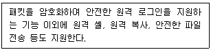
- SSH
- telnet
- NFS
- FTP
(정답률: 73%)
57. 다음 설명에 해당하는 웹 브라우저로 알맞은 것은?
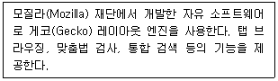
- 사파리
- 오페라
- 크롬
- 파이어폭스
(정답률: 73%)
58. 다음 중 전자 우편 서비스와 관련된 프로토콜로 가장 거리가 먼 것은?
- SNMP
- SMTP
- IMAP
- POP3
(정답률: 70%)
59. 다음 설명에 해당하는 LAN 구성 방식으로 알맞은 것은?
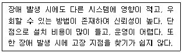
- 망(Mesh)형
- 링(Ring)형
- 버스(Bus)형
- 스타(Star)형
(정답률: 73%)
60. 다음 그림에 해당하는 케이블로 알맞은 것은?
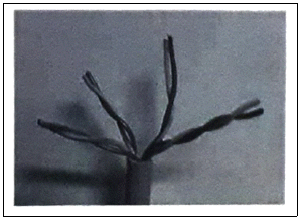
- STP
- UTP
- BNC
- Fiber Cable
(정답률: 69%)
61. 다음 중 C 클래스 네트워크 대역에서 서브넷 마스크값을 255.255.255.192로 설정했을 때 생성되는 서브 네트워크의 개수로 알맞은 것은?
- 2
- 4
- 62
- 64
(정답률: 62%)
62. 다음 중 로컬 네트워크상에 있는 다른 호스트의 MAC 주소를 확인할 때 사용하는 명령으로 알맞은 것은?
- ip
- ss
- arp
- ifconfig
(정답률: 65%)
63. 다음 중 라우팅 테이블 정보를 출력하는 명령으로 알맞은 것은?
- ip
- ifconfig
- mii-tool
- ethtool
(정답률: 40%)
64. 다음 중 CentOS 7 버전에서 이더넷 카드(Ethernet Card)를 장착했을 때 나타나는 장치명의 형식으로 가장 알맞은 것은?
- lo
- eth0
- enp0s3
- virbr0
(정답률: 49%)
65. 다음 중 SSH 서버의 변경된 포트 번호로 접속하기 위해 사용되는 ssh 명령어의 옵션으로 알맞은 것은?
- -l
- -n
- -p
- -x
(정답률: 65%)
66. 다음 ( 괄호 ) 안에 들어갈 내용으로 알맞은 것은?
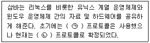
- ㉠ SMB, ㉡ CIFS
- ㉠ SMB, ㉡ NFS
- ㉠ CIFS, ㉡ SMB
- ㉠ NFS, ㉡ CIFS
(정답률: 55%)
67. 다음 설명에 해당하는 OSI 계층으로 알맞은 것은?
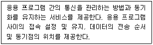
- 네트워크 계층
- 전송 계층
- 세션 계층
- 표현 계층
(정답률: 55%)
68. 다음 중 IPv4의 C 클래스 네트워크 주소 대역으로 알맞은 것은?
- 191.0.0.0 ~ 223.255.255.255
- 192.0.0.0 ~ 223.255.255.255
- 191.0.0.0 ~ 233.255.255.255
- 192.0.0.0 ~ 233.255.255.255
(정답률: 62%)
69. 다음 ( 괄호 ) 안에 들어갈 내용으로 알맞은 것은?
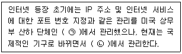
- ㉠ IEEE, ㉡ ICANN
- ㉠ ICANN, ㉡ IEEE
- ㉠ ICANN, ㉡ IANA
- ㉠ IANA, ㉡ ICANN
(정답률: 47%)
70. 다음 설명에 해당하는 명칭으로 가장 알맞은 것은?
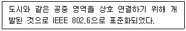
- X.25
- ATM
- DQDB
- FDDI
(정답률: 55%)
71. 다음 조건일 때 설정되는 게이트웨이 주소 값으로 가장 알맞은 것은?
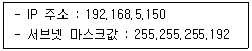
- 192.168.5.126
- 192.168.5.127
- 192.168.5.128
- 192.168.5.129
(정답률: 47%)
72. 다음 설명에 해당하는 LAN 케이블 규격으로 알맞은 것은?
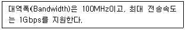
- CAT-5
- CAT-5E
- CAT-6
- CAT-7
(정답률: 61%)
73. 다음 중 마이크로소프트사의 파워포인트를 대체해서 사용할 수 있는 프로그램으로 알맞은 것은?
- LibreOffice Writer
- LibreOffice Draw
- LibreOffice Calc
- LibreOffice Impress
(정답률: 68%)
74. 다음 중 이미지 뷰어 프로그램으로 가장 알맞은 것은?
- eog
- totem
- evolution
- evince
(정답률: 67%)
75. 다음 중 GNOME과 가장 관련이 깊은 라이브러리로 알맞은 것은?
- Qt
- Xlib
- XCB
- GTK+
(정답률: 55%)
76. 다음은 X 서버에 접근할 수 있는 클라이언트를 허가하는 과정이다. ( 괄호 ) 안에 들어갈 내용으로 알맞은 것은?
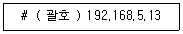
- xset
- xauth
- xhost
- xrandr
(정답률: 57%)
77. 다음 중 윈도 매니저의 종류로 틀린 것은?
- Metacity
- Xfce
- Mutter
- Kwin
(정답률: 45%)
78. GNOME 데스크톱을 사용 중인데, 다른 데스크톱 환경으로 변경하려고 한다. 다음 중 설치 가능한 데스크톱 환경으로 알맞은 것은?
- KDE
- Mutter
- Metacity
- Nautilus
(정답률: 55%)
79. 다음 중 시스템 시작 시 콘솔 기반의 텍스트 모드로 부팅이 되도록 설정하는 명령으로 알맞은 것은?
- systemctl set – default multi – user.service
- systemctl set – default multi – user.target
- systemctl get – default multi – user.service
- systemctl get – default multi – user.target
(정답률: 54%)
80. 다음은 X 윈도 터미널에서 해상도를 변경하는 과정이다. ( 괄호 ) 안에 들어갈 명령어로 알맞은 것은?
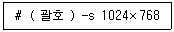
- xmodmap
- xset
- xrefresh
- xrandr
(정답률: 48%)